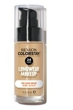
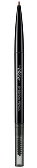

診断結果
ホスト系メイクで印象UP ：「垢抜けを実現する」
基本ステップを紹介！！！！
※がついている商品は肌に合わない可能性があるので
心配なら他の商品での代用でもOK!!
おすすめのメンズコスメはこちら
ベースメイク：レブロンカラーステイ
ロングウェアメイクアップ

24時間くずれ防止系のファンデーションで
長時間てかりにくい事で有名な
プチプラファンデーションです。
眉メイク：ヴィセ リシェ アイブロウペンシルＳ

Visseのアイブロウペンシルは繰り出し式の眉ペンで
芯がかなり細く作られています。
毛を1本1本描き足したい時とか
ナチュラルに眉デザインをしたい人にも
おすすめしたいですね。
ハイライト/立体感メイク：セザンヌノーズ
シャドウハイライト
【※脂性肌の方は肌荒れ注意】
代用商品はこちら！！
[心配な方はこちらをクリック！！]

アイメイク：ラブ・ライナー リキッド

[心配な方はこちらをクリック！！]
ハイライトとシェーディングがひとつになったタイプ
なので,ノーズシャドウから鼻筋のハイライトまで
これ一つで完結できます。
セザンヌのパレッドのいいところは
不自然になりすぎないベージュの
ローライトであるという点です。
アイメイク：ラブ・ライナー リキッド
アイライナーR5
筆先も細く、繊細なラインが描けるので
やりすぎた感を出さずに目ヂカラを
UPすることができます。ナチュラルにメイクを
仕上げたい場合はブラウン系！
強調したい場合はブラック系を選んでみてください。